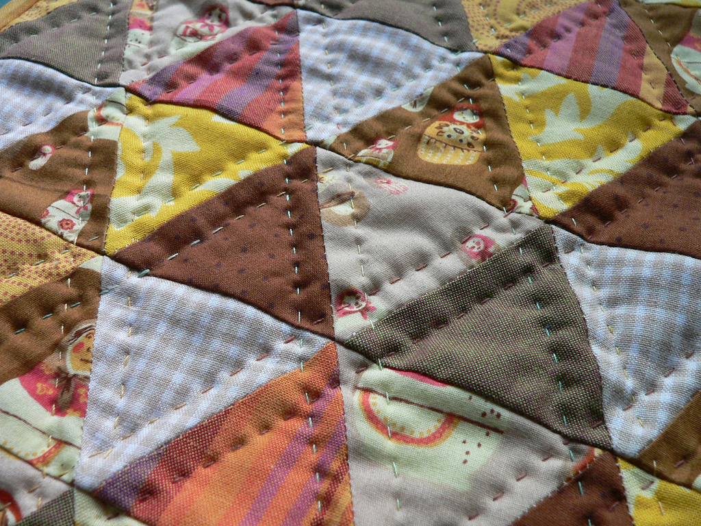

PageZoom
A MooTools class to zoom in anything in a page.
Works best in Firefox 3.5, Safari 4 and Chrome. Oh, Internet Explorer 8 as well.
Demo

Image from Flickr.
Known Issues
Won't work on IE. Works now in version 8, not sure about 6 and 7. I'm not interested.- Preview can't work for dynamic content like Flash, animations, etc.
Source Code
http://github.com/cheeaun/pagezoom